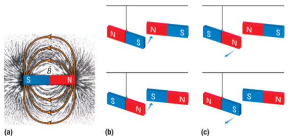
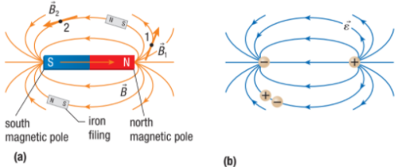
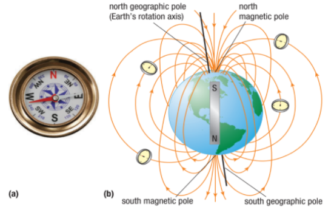
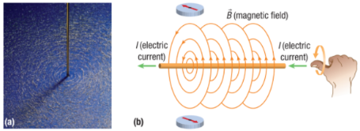

Magnets and Electromagnets

Imagine going camping in northern Canada, and on your first night you look up and see bright greenish-white ribbons of light stretching across the night sky. The glowing lights, shown in the picture, are in motion, rippling up and down. What causes these lights to appear? Why do they move and swirl?
Magnetic Field
A magnetic field is a vector field that describes the magnetic influence on moving electric charges, electric currents, and magnetic materials. A moving charge in a magnetic field experiences a force perpendicular to its own velocity and to the magnetic field.

Permanent Magnets
A permanent magnet is an object made from a material that is magnetized and creates its own persistent magnetic field.

(a) The iron filings around the bar magnet show that the magnetic field B > extends from the north pole of a magnet to the south pole.
(b) The interaction of the magnetic fields of two magnets causes unlike poles to attract each other.
(c) The interaction of the magnetic fields causes like poles to repel each other.
A magnetic field, however, will always result from a magnetic dipole. There will always be a north pole and a south pole producing the magnetic field. You can never have only a south pole or only a north pole.

Earth’s Magnetic Field
The largest magnet on Earth is Earth itself. A compass needle is a small bar magnet mounted so that it can swivel freely about its center. Earth’s magnetic field exerts a torque (twisting force) on this magnet.
From experiments done with compass needles, William Gilbert, a sixteenth-century English scientist, reasoned that Earth acts as a very large, permanent magnet oriented

(a) A compass.
(b) If we were to place compasses at different spots in Earth’s magnetic field, each compass needle would be aligned parallel to the field.
Earth has two geographic poles, the north pole and the south pole, where Earth’s axis of rotation meets Earth’s surface. Every magnet, including Earth, has two magnetic poles, a north and a south pole. A compass needle aligns itself to point to Earth’s magnetic poles.
Earth’s geographic poles are not exactly in the same location as its magnetic poles, but they are close enough that we can say that the north magnetic pole of a compass needle points approximately toward Earth’s north geographic pole.
Electromagnetism
Electromagnetism is a branch of Physics, that deals with the electromagnetic force that occurs between electrically charged particles. The electromagnetic force is one of the four fundamental forces and exhibits electromagnetic fields such as magnetic fields, electric fields, and light.
Magnetic Field of a Straight Conductor
Moving charges, like those in an electric current, produce a magnetic field. Current in a straight wire or other long, straight conductor creates a magnetic field whose lines look like circles centered on the wire.

(a) Iron filings indicate the circular magnetic field around a conducting wire.
(b) The right-hand rule for a straight conductor indicates the direction of the magnetic field.
Magnetic Field of a Current Loop
If you make a circular loop from a straight wire and run a current through the wire, the magnetic field will circle around each segment of the loop. The field lines inside the loop create a stronger magnetic field than those on the outside because they are closer together.

(a) Each segment of a current loop produces a magnetic field, B >, similar to that of a straight conductor.
(b) The fields of each segment combine to produce a field similar to that of a bar magnet.
(c) The right-hand rule for a straight conductor indicates the magnetic field direction for a single loop.
(d) Iron filings show the magnetic field circling the loop.
Practice
Earth is surrounded by a magnetic field.
(a) Where are Earth’s magnetic poles?
(b) Explain how Earth’s magnetic field contributes to the aurora borealis.